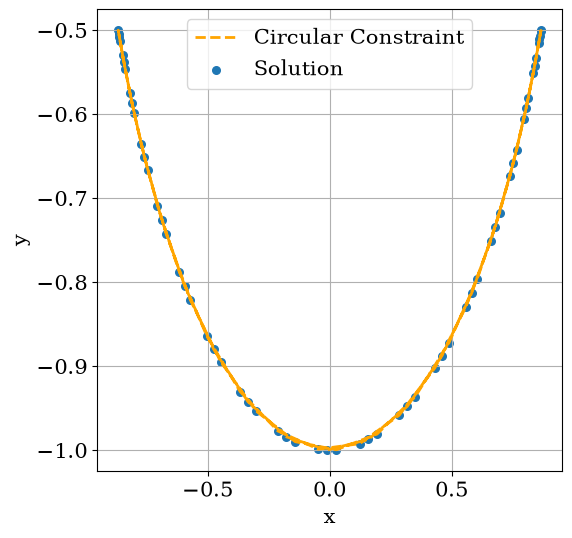

[1]:
import matplotlib.pyplot as plt
import numpy as np
from matplotlib import rc
rc("font", family="serif", size=15)
rc("savefig", dpi=600)
rc("figure", figsize=(8, 6))
rc("mathtext", fontset="dejavuserif")
rc("lines", linewidth=3)
Planar Pendulum
This example is taken from the Scikits.odes documentation. Here approximately the same example is given, but using the STREAM package which kindly depends on Scikits.odes.
Imagine a planar (2D) pendulum whose string is of length \(l\), at the end of which hangs a weight of mass \(m\), given gravitational acceleration \(g\). Friction is disregarded, as usual.
The Lagrangian of such a problem is simply
Where \(\dot{x} = u, \dot{y} = v\), and subject to the holonomic constraint
This constraint may be added by a Lagrange multiplier:
Now using the Euler-Lagrange equation we arrive at 2 additional equation to a total of 4:
A final equation is the constraint itself (which is derived twice to a final form of \(u^2 + v^2 + \lambda l^2/m - gy = 0\), left to the reader as an exercise). Implementation is quite straightforward:
[2]:
import pandas as pd
from stream import Aggregator, Calculation
from stream.units import Array1D
l, m, g = 1.0, 1.0, 1.0
class PendulumCalculation(Calculation):
name = "Pendulum"
def calculate(self, variables, **kwargs) -> Array1D:
x, y, u, v, λ = variables
k = λ / m
ẋ = u
ẏ = v
u̇ = k * x
v̇ = k * y - g
constraint = u**2 + v**2 + k * (x**2 + y**2) - y * g
return np.array([ẋ, ẏ, u̇, v̇, constraint])
@property
def mass_vector(self):
return True, True, True, True, False
@property
def variables(self):
return {"x": 0, "y": 1, "u": 2, "v": 3, "λ": 4}
pendulum = PendulumCalculation()
agr = Aggregator.from_decoupled(pendulum)
We’ll give the same initial conditions:
[3]:
λ0 = 0.1
θ0 = np.pi / 3
x0 = np.sin(θ0)
y0 = -((l**2 - x0**2) ** 0.5)
z0 = np.array([x0, y0, 0.0, 0.0, λ0])
zp0 = np.array([0.0, 0.0, λ0 * x0 / m, (λ0 * y0 / m) - g, -g])
[4]:
time = [0.0, 1.0, 2.0]
solution = agr.solve(z0, time, zp0)
[5]:
pd.DataFrame(solution.data, time, pendulum.variables.keys())
[5]:
| x | y | u | v | λ | |
|---|---|---|---|---|---|
| 0.0 | 0.866025 | -0.500000 | 0.000000 | 0.000000 | -0.500000 |
| 1.0 | 0.592664 | -0.805450 | -0.629538 | -0.463228 | -1.416349 |
| 2.0 | -0.304225 | -0.952604 | -0.906323 | 0.289441 | -1.857788 |
The ‘x’ position is given in the example and appears to be in total agreement. Up till here we’ve confirmed STREAM allows usage of Scikits.odes. Now, let’s make some sense of the solution:
[6]:
time = np.linspace(0, 10, 60)
solution = agr.solve(z0, time, zp0)
plt.figure(figsize=(6, 6))
x, y = agr.at_times(solution, pendulum, "x"), agr.at_times(solution, pendulum, "y")
plt.plot(x, -np.sqrt(l**2 - x**2), color="orange", linestyle="dashed", linewidth=2)
plt.scatter(x, y, 30)
plt.grid()
plt.xlabel("x")
plt.ylabel("y")
plt.legend(["Circular Constraint", "Solution"])
plt.show()
